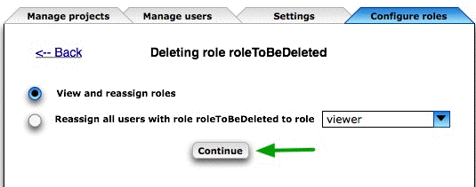
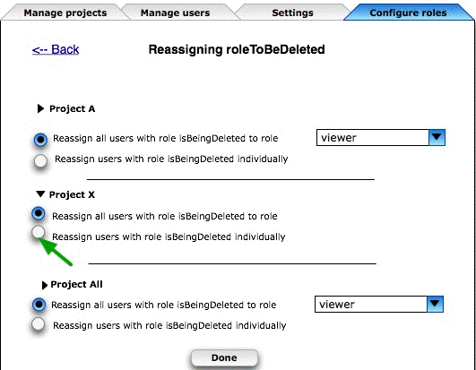
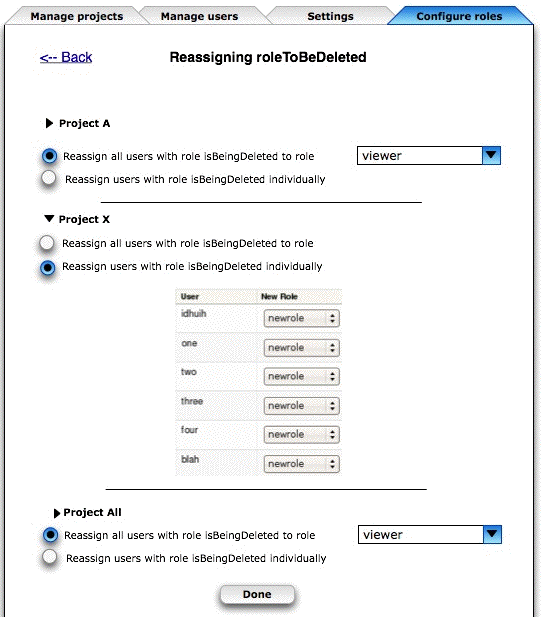

Deleting Roles
One of the ways DrProject improves on Trac is role-based access control. A role is a set of capabilities, such as WIKI_VIEW or TICKET_EDIT, and users’ relationships to projects are represented by triples of the form (user, project, role). It makes administration a lot easier, and once Qiyu Zhu’s web-based role editor comes online, it’ll be easier still.
But nothing worth having comes without some kind of price. Suppose a portal administrator decides to delete a role—what should happen to people who actually have that role with respect to one or more projects? For example, if the MEMBERSHIP table looks like this:
| MEMBERSHIP | ||
| USER | PROJECT | ROLE |
| Greg | Telepathy | developer |
| Greg | Antigravity | developer |
| Qiyu | Telepathy | developer |
| Qiyu | Antigravity | viewer |
| Sandeep | Telepathy | viewer |
then what should happen if the “viewer” role is deleted? Options include:
- Nothing—leave the MEMBERSHIP table as it is. That seems bad because role values like "viewer" are foreign keys for the CAPABILITY table, and dangling foreign keys would make joins and other operations scary.
- Delete all records from MEMBERSHIP that have the role being deleted. This effectively removes everyone who had that role from those projects (if you don't have an explicit role, you have whatever rights the anonymous user has). This solves the dangling foreign key problem, but now the admin might have to go through all of the users in the portal and give them new roles in those projects one by one.
- Only allow admins to delete roles that aren't being used. This option forces admins to reassign people before deleting the role, so they're easier to find, but still means a lot of hand-work.
- Allow admins to reassign users' roles during the deletion process.
We’ve decided to go with #4, and Liz Blankenship has mocked up a UI for it. Aninteractive version is online (follow the trail of green arrows), or you can check out the screenshots below. Comments would as always be welcome.
Step 1

Step 2

Step 3
